| 4 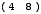 | 7 | |||||
| 3 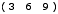 | 26 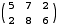 | 44
| ||||
| 2 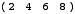 | 23 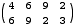 | 134 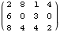 | 416
| |||
| 1 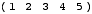 | 19 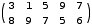 | 143 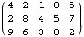 | 494 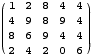 | 1443 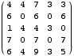 | ||
| 1 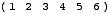 | 16 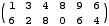 | 143 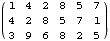 | 592 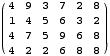 | 3913 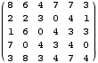 | 14443
| |
| 1 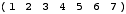 | 14 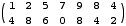 | 136 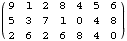 | 40737 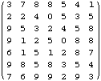 | |||
| 1 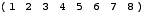 | 9 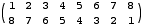 | 124 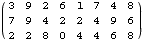 | ||||
| 1 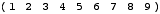 | 9 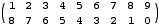 |
. What are the largest common divisors of larger square matrices? What about non-square matrices? What if we require each entry of the matrix to be two digits? What about different bases? What about higher dimensional matrices?
Here are the largest common divisors known for small matrices. The larger non-square ones were sent by Philippe Fondanaiche (and are not known to be optimal). The 6×6 annd 7×7 were sent by Ulrich Schimke.
| 4 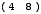 | 7 | |||||
| 3 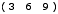 | 26 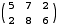 | 44
| ||||
| 2 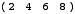 | 23 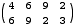 | 134 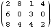 | 416
| |||
| 1 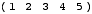 | 19 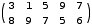 | 143 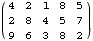 | 494 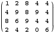 | 1443 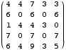 | ||
| 1 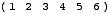 | 16 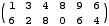 | 143 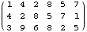 | 592 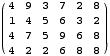 | 3913 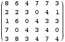 | 14443
| |
| 1 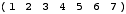 | 14 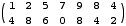 | 136 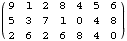 | 40737 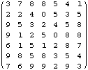 | |||
| 1 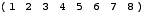 | 9 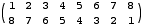 | 124 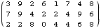 | ||||
| 1 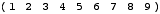 | 9 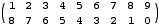 |
Claudio Baiocchi also considered the cases where each entry can/must be two digits. The matrix 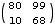 has a common divisor of 89, and the matrix 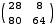 has a common divisor of 288.
Philippe Fondanaiche extended this to larger matrices by finding 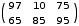 with common divisor 1085 and 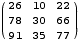 with common divisor 6869.
Antonio Ianiero suggested using cyclic numbers to form large matrices of this form, like the one below. Unfortunately, each number appears twice, once in a row and once in a column.
Johan de Ruiter considered small bases. He proved there are no such matrices in base 2, but there are square matrices in all larger bases. He found the largest common divisor for some small matrices in base 3. He also considered factorial bases.
Ulrich Schimke pointed out that the common divisor can obviously never be a multiple of 10, and asked whether all other numbers could be. Also, he found that if the common divisor divides 10n–1 and a solution has no "9" in the first row or column then exchanging all digits "k" with "9–k" gives another solution.
If you can extend any of these results, please e-mail me. Click here to go back to Math Magic. Last updated 6/21/03.